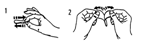

RÉSUMÉ DES CARACTÉRISTIQUES DU PRODUIT
ANSM - Mis à jour le : 27/09/2012
ESTRADERM TTS 25 microgrammes/24 heures, dispositif transdermique
2. COMPOSITION QUALITATIVE ET QUANTITATIVE
Contenu de la matrice de diffusion
Estradiol .......................................................................................................................................... 2,0 mg
Pour un dispositif transdermique de 11,3 cm2 (dont 5 cm2 de surface de libération de la substance active).
Pour la liste complète des excipients, voir rubrique 6.1.
Dispositif transdermique.
4.1. Indications thérapeutiques
L'expérience de ce traitement chez les femmes âgées de plus de 65 ans est limitée.
4.2. Posologie et mode d'administration
Appliquer ESTRADERM TTS 25 microgrammes/24 h 2 fois par semaine, c'est-à-dire renouveler le dispositif transdermique tous les 3 ou 4 jours.
Pour débuter ou poursuivre un traitement dans l'indication des symptômes post-ménopausiques, la dose minimale efficace doit être utilisée pendant la plus courte durée possible (voir rubrique 4.4).
En fonction de l'évolution clinique, la posologie doit être adaptée aux besoins individuels:
· si la dose choisie n'a pas corrigé les signes et symptômes de déficit estrogénique, un dosage plus fort doit être administré.
· l’apparition d'une sensation de tension des seins, de métrorragies, de rétention d’eau ou ballonnements (persistant pendant plus de 6 semaines), d'une irritabilité, indique en général que la dose est trop élevée et doit être modifiée.
ESTRADERM TTS 25 microgrammes /24 h peut être utilisé selon le schéma thérapeutique :
· Cyclique (discontinu) pendant 24 à 28 jours, suivis d'un intervalle libre de tout traitement de 2 à 7 jours.
Durant cet intervalle, des hémorragies de privation peuvent apparaître.
· Continu (une application 2 fois par semaine), sans aucune période d'arrêt du traitement.
Un traitement continu, non cyclique, peut être indiqué dans le cas ou les symptômes de déficit estrogénique se manifestent à nouveau fortement au cours de l'intervalle libre.
S'il s'agit d'une prescription chez une femme ne prenant pas de THS ou d'un relais d'un THS combiné continu, le traitement peut être commencé n'importe quel jour.
Par contre, si le traitement préalable est un THS séquentiel, le cycle de traitement en cours doit être terminé avant de commencer un traitement par ESTRADERM TTS 25 microgrammes /24 h.
Chez les femmes non hystérectomisées, un progestatif doit être ajouté pour s'opposer au développement d'une hyperplasie endométriale induite par l'estrogène.
Le traitement séquentiel par des progestatifs doit se faire selon le schéma suivant :
· Si ESTRADERM TTS 25 microgrammes/24 h est administré de façon cyclique (discontinue), le progestatif sera administré durant au moins les 12 derniers jours du traitement par l'estradiol. Ainsi, il n'y aura aucune administration hormonale pendant l'intervalle libre de chaque cycle.
· Si ESTRADERM TTS 25 microgrammes/24 h est administré de façon continue, il est recommandé de prendre le progestatif durant au moins 12 jours chaque mois (continu séquentiel).
Dans les deux cas, des saignements peuvent apparaître après l'arrêt du traitement par le progestatif.
Chez les femmes hystérectomisées, il n'est pas recommandé d'associer un progestatif sauf en cas d'antécédent d'endométriose.
Mode d'administration
Une fois la feuille de protection détachée (voir images ci-dessous), ESTRADERM TTS 25 microgrammes/24 h doit immédiatement être appliqué sur la peau qui doit être propre, sèche, non irritée, ni lésée, ni traitée par des produits huileux ou gras.

Choisir un emplacement (l’abdomen, les fesses ou dans la région lombaire) ne présentant pas de plis importants qui ne soit pas le siège de frottements vestimentaires.
L'estradiol étant dégradé par les rayons ultraviolets, le dispositif transdermique ne doit pas être exposé directement aux rayons du soleil.
L’expérience avec ce dispositif transdermique a montré qu’il y a moins d’irritations cutanées lorsque le dispositif transdermique est appliqué sur les fesses par rapport aux autres sites d’application. Il est donc recommandé d’appliquer le dispositif transdermique sur les fesses.
ESTRADERM TTS 25 microgrammes /24 h ne doit jamais être appliqué sur ou près des seins. ESTRADERM TTS 25 microgrammes/24 h ne doit pas être appliqué 2 fois de suite au même endroit.
Il est possible de se doucher ou de prendre un bain tout en gardant le dispositif transdermique.
Dans le cas d'un décollement du dispositif transdermique (eau très chaude, hypersudation, frottement anormal de vêtements), il est recommandé de le replacer sur la peau sèche. Si cela n'est pas possible, utilisez un dispositif transdermique neuf qui sera retiré à la date initialement prévue. Reprendre ensuite le rythme de changement du dispositif transdermique conformément au schéma thérapeutique initial.
En cas d’oubli de remplacement d’ESTRADERM TTS 25 microgrammes/24 h, un nouveau dispositif transdermique doit être appliqué dès que possible. Reprendre ensuite le rythme de changement du dispositif transdermique conformément au schéma thérapeutique initial. L'oubli de l'application d'un patch peut favoriser la récurrence des symptômes et la survenue de saignements et de spottings.
· Hypersensibilité connue à la substance active ou à l'un des excipients mentionnés à la rubrique 6.1 ;
· Cancer du sein connu ou suspecté ou antécédent de cancer du sein ;
· Tumeurs malignes estrogéno-dépendantes connues ou suspectées (exemple: cancer de l'endomètre) ;
· Hémorragie génitale non diagnostiquée ;
· Hyperplasie endométriale non traitée ;
· Antécédent d'accident thrombo-embolique veineux ou accident thrombo-embolique veineux en évolution (thrombose veineuse profonde, embolie pulmonaire) ;
· Troubles thrombophiliques connus (exemple : déficit en protéine C, en protéine S ou en antithrombine) (voir rubrique 4.4) ;
· Accident thrombo-embolique artériel récent ou en évolution (exemple: angor, infarctus du myocarde);
· Affection hépatique aiguë ou antécédents d'affection hépatique, jusqu'à normalisation des tests hépatiques ;
· Porphyrie.
4.4. Mises en garde spéciales et précautions d'emploi
Dans l'indication du traitement des symptômes de la ménopause, un THS ne doit être instauré que si les troubles sont perçus par la patiente comme altérant sa qualité de vie. Dans tous les cas, une réévaluation du rapport bénéfice/risque doit être effectuée au moins une fois par an. Le THS peut être poursuivi tant que le bénéfice est supérieur au risque encouru.
Les preuves de l’existence de risques associés à un THS dans le traitement des femmes ménopausées prématurément sont limitées. En raison du faible niveau du risque absolu chez les femmes plus jeunes, le rapport bénéfice / risque pourrait cependant être plus favorable que chez les femmes plus âgées.
Examen clinique et surveillance
Avant de débuter ou de recommencer un traitement hormonal substitutif (THS), il est indispensable d'effectuer un examen clinique et gynécologique complet (y compris le recueil des antécédents médicaux personnels et familiaux), en tenant compte des contre-indications et précautions d'emploi. Pendant toute la durée du traitement, des examens réguliers seront effectués, leur nature et leur fréquence étant adaptées à chaque patiente.
Les femmes doivent être informées du type d'anomalies mammaires pouvant survenir sous traitement; ces anomalies doivent être signalées au médecin traitant (voir paragraphe «cancer du sein » ci-dessous). Les examens, y compris des examens appropriés par imagerie tels qu’une mammographie, doivent être pratiqués selon les recommandations en vigueur, et adaptés à chaque patiente.
Les femmes doivent être informées qu’ESTRADERM TTS 25 microgrammes/24h n’est pas un contraceptif et ne restaure pas la fertilité.
Conditions nécessitant une surveillance
Si l'une des affections suivantes survient, est survenue précédemment, et/ou s'est aggravée au cours d'une grossesse ou d'un précédent traitement hormonal, la patiente devra être étroitement surveillée et le rapport bénéfice/risque du THS réévalué individuellement. Les affections suivantes peuvent réapparaître ou s'aggraver au cours du traitement par ESTRADERM TTS 25 microgrammes/24 h, en particulier :
· léiomyome (fibrome utérin) ou endométriose ;
· présence de facteurs de risque thrombo-emboliques (voir ci-dessous) ;
· facteurs de risque de tumeurs estrogéno-dépendantes, par exemple: 1er degré d'hérédité pour le cancer du sein ;
· hypertension artérielle ;
· troubles hépatiques (par exemple: adénome hépatique) ;
· diabète avec ou sans atteinte vasculaire ;
· lithiase biliaire ;
· migraines ou céphalées sévères ;
· lupus érythémateux disséminé ;
· antécédent d'hyperplasie endométriale (voir ci-dessous);
· épilepsie ;
· asthme ;
· otospongiose ;
Allergie de contact
Comme avec toute formulation locale, bien que cela soit extrêmement rare, une sensibilisation de contact peut survenir. Les femmes qui présentent une sensibilisation de contact à l'un des composants du patch doivent être averties qu'une réaction sévère d'hypersensibilité peut survenir si l'exposition au produit responsable est maintenue.
Réactions anaphylactiques/anaphylactoïdes sévères et œdème de Quincke
Des cas de réactions anaphylactiques/anaphylactoïdes, survenus à n’importe quel moment du traitement par Estraderm TTS et ayant nécessité une prise en charge médicale d’urgence, ont été rapportés après commercialisation. Estraderm TTS ne doit pas être réadministré chez les patients ayant développé un œdème de Quincke lors d’un traitement antérieur par ce médicament.
Arrêt immédiat du traitement
Le traitement doit être arrêté immédiatement en cas de survenue d'une contre-indication ou dans les cas suivants :
· ictère ou altération de la fonction hépatique;
· augmentation significative de la pression artérielle:
· céphalée de type migraine inhabituelle;
· grossesse.
Hyperplasie endométriale et cancer de l’endomètre
Chez les femmes ayant un utérus intact, le risque d'hyperplasie endométriale et de cancer de l'endomètre augmente en cas d'administration prolongée d'estrogènes seuls. Le risque de cancer de l’endomètre est de 2 à 12 fois supérieur comparé aux femmes ne prenant pas d’estrogènes, selon la durée du traitement et la dose d’estrogènes utilisée (voir rubrique 4.8).
Après arrêt du traitement, le risque peut rester élevé pendant au moins 10 ans.
Chez les femmes non hystérectomisées, l'association d'un progestatif de façon cyclique pendant au moins 12 jours par mois / cycle de 28 jours ou la prise d’un traitement estro-progestatif combiné continu empêche l’augmentation du risque associée aux estrogènes seuls comme THS.
Des métrorragies et des «spottings» peuvent survenir au cours des premiers mois de traitement. La survenue de saignements irréguliers plusieurs mois après le début du traitement ou la persistance de saignements après l'arrêt du traitement doivent faire rechercher une pathologie sous-jacente. Cette démarche peut nécessiter une biopsie endométriale afin d'éliminer une pathologie maligne.
La stimulation par les estrogènes peut conduire à une transformation maligne ou prémaligne des foyers résiduels d'endométriose. L'association d'un progestatif à l'estrogène doit être envisagée en cas de foyers résiduels d'endométriose chez les femmes qui ont subi une hystérectomie suite à une endométriose.
Cancer du sein
L’ensemble des données disponibles suggèrent une augmentation du risque de survenue du cancer du sein chez les femmes utilisant des associations estro-progestatives mais aussi peut-être des estrogènes seuls, cette augmentation est fonction de la durée du THS.
Traitement par une association estro-progestative
Une étude randomisée versus placebo, la « Women's Health Initiative Study (WHI) » et des études épidémiologiques, ont montré une augmentation du risque de survenue de cancer du sein chez les femmes traitées par des associations estro-progestatives, qui devient évidente après environ 3 ans (voir rubrique 4.8).
Traitement par des estrogènes seuls
L’étude WHI n’a pas montré d’augmentation du risque de survenue du cancer du sein chez les femmes hystérectomisées utilisant des estrogènes seuls comme THS. Les études observationnelles ont surtout mis en évidence une légère augmentation des diagnostics de cancer du sein qui est sensiblement plus faible que chez les femmes utilisant un traitement par une association estro-progestative (voir rubrique 4.8).
L'augmentation du risque devient évidente après quelques années d'utilisation. Le risque diminue dès l'arrêt du traitement pour disparaître progressivement en quelques années (au plus 5 ans).
Les THS, particulièrement les traitements combinés estrogène/progestatif, augmentent la densité mammaire à la mammographie, ce qui pourrait gêner le diagnostic de cancer du sein.
Accidents thrombo-emboliques veineux
Le THS est associé à un risque 1,3 à 3 fois plus élevé d'accidents thrombo-emboliques veineux (thrombose veineuse profonde ou embolie pulmonaire). Cet événement survient plutôt au cours de la première année de traitement (voir rubrique 4.8).
Les patientes présentant une maladie thrombotique connue ont un risque accru d'accident thrombo-embolique veineux. Le THS pourrait majorer ce risque. Chez ces patientes, l'utilisation d'un THS est contre-indiquée (voir rubrique 4.3).
Les facteurs de risque reconnus d'accidents thrombo-emboliques veineux sont: utilisation d’estrogènes, âge, chirurgie importante, immobilisation prolongée, obésité sévère (IMC > 30 kg/m2), grossesse / postpartum, lupus érythémateux disséminé (LED), cancer. En revanche, il n'existe aucun consensus sur le rôle possible des varices dans les accidents thrombo-embolique veineux.
Afin de prévenir tout risque thrombo-embolique veineux post-opératoire, les mesures prophylactiques habituelles doivent être strictement appliquées. En cas d'immobilisation prolongée suite à une intervention chirurgicale programmée, une interruption provisoire du traitement 4 à 6 semaines avant l'intervention est recommandée. Le traitement ne sera réinstauré que lorsque la patiente aura repris une mobilité normale.
Chez les femmes sans antécédents de thrombose veineuse mais avec un membre de la famille proche ayant des antécédents de thrombose à un jeune âge, des examens peuvent être proposés, tout en informant de leurs limites (seuls certains types de troubles thrombophiliques sont identifiés lors de ces examens). Si un trouble thrombophilique lié à des thromboses chez des membres de la famille est identifié ou si le trouble est sévère (par exemple déficit en antithrombine III, en protéine S ou protéine C, ou combinaisons de troubles), le THS est contre-indiqué.
Chez les femmes suivant déjà un traitement à long terme par anticoagulants, le rapport bénéfice/risque d'un THS doit être évalué avec précaution.
La survenue d'un accident thrombo-embolique impose l'arrêt du THS. Les patientes devront être informées de la nécessité de contacter immédiatement leur médecin en cas de survenue de signes évoquant une thrombose tels que gonflement douloureux d'une jambe, douleurs soudaines dans la poitrine ou dyspnée.
Maladie coronarienne
Les études randomisées contrôlées n'ont pas mis en évidence de protection contre l’infarctus du myocarde chez les femmes avec ou sans maladie coronarienne préexistante traitées par une association d’estro-progestatifs ou par des estrogènes seuls.
Traitement par une association estro-progestative
Le risque relatif de maladie coronarienne est légèrement augmenté lors d’un traitement par une association estro-progestative. Puisque le risque absolu de base de maladie coronarienne dépend fortement de l’âge, le nombre de cas supplémentaire de maladie coronarienne due à l’association estroprogestative est très faible chez les femmes en bonne santé proches de la ménopause, mais augmente avec l’âge.
Traitement par des estrogènes seuls
Les études randomisées contrôlées n’ont pas mis en évidence d’augmentation du risque de maladie coronarienne chez les femmes hystérectomisées utilisant les estrogènes seuls.
Accidents vasculaires cérébraux
Une augmentation jusqu’à 1,5 fois du risque d'accident vasculaire cérébral ischémique a été montré chez les femmes traitées par une association d’estro-progestatifs ou des estrogènes seuls. Le risque relatif ne change pas avec l’âge ou le temps après la ménopause. Cependant, comme le risque absolu de base d’accident vasculaire cérébral est fortement dépendant de l’âge, le risque global de survenue d’un accident vasculaire cérébral chez la femme utilisant un THS augmentera avec l’âge (voir rubrique 4.8).
Cancer des ovaires
Le cancer des ovaires est plus rare que le cancer du sein. Certaines études épidémiologiques ont montré qu'une utilisation prolongée (au moins 5 à 10 ans) d'un estrogène seul ou avec progestatif chez des femmes hystérectomisées et non-hystérectomisées était associée à un risque augmenté de cancer ovarien.
Certaines études, dont l’essai WHI, semblent indiquer que l’utilisation prolongée de THS combiné peut conférer un risque similaire ou légèrement plus faible de cancer de l’ovaire par rapport à l’utilisation d’un oestrogène seul (voir rubrique 4.8).
Autres précautions d'emploi
· Les estrogènes pouvant provoquer une rétention hydrique, les patientes présentant une insuffisance rénale ou cardiaque doivent être étroitement surveillées.
· Les patientes en insuffisance rénale terminale doivent être étroitement surveillées en raison de l’augmentation possible des taux circulants du principe actif de ESTRADERM TTS 25 microgrammes/24 h.
· Les femmes avec une hypertriglycéridémie préexistante doivent être surveillées pendant le traitement hormonal substitutif. De rares cas d'augmentation importante du taux des triglycérides conduisant à une pancréatite ont été observés sous estrogénothérapie.
· La fonction thyroïdienne doit être surveillée chez les patientes recevant un traitement substitutif par hormones thyroïdiennes lors d’un traitement par estrogènes (voir rubrique 4.5).
· Au cours du traitement par les estrogènes, une augmentation des taux plasmatiques de la TBG (thyroid binding globulin) est observée, elle conduit à une élévation des taux plasmatiques des hormones thyroïdiennes totales mesurés par PBI (protein-bound iodine), de la T4 totale (mesuré sur colonne ou par RIA (radioimmunoassay)) et de la T3 totale (mesuré par RIA). La fixation de la T3 sur la résine est diminuée, reflétant l'augmentation de la TBG. Les concentrations des fractions libres de T4 et de T3 restent inchangées.
Les taux sériques d'autres protéines de liaison telles que la CBG (corticoid binding globulin) et la SHBG (sex-hormone binding globulin) peuvent être augmentés entraînant, respectivement, une augmentation des taux circulants de corticoïdes et de stéroïdes sexuels. Les concentrations des fractions libres ou actives des hormones restent inchangées.
D'autres protéines plasmatiques peuvent également être augmentées (angiotensinogène/substrat de la rénine, alpha -1-antitrypsine, céruloplasmine).
Les estrogènes peuvent déclencher ou amplifier les symptômes d’un angio-œdème, notamment chez les femmes présentant un angio-œdème héréditaire
· L’utilisation de THS n’améliore pas les fonctions cognitives. Il existe une augmentation du risque de probable démence chez les femmes débutant un traitement combiné continu ou par estrogènes seuls après 65 ans.
4.5. Interactions avec d'autres médicaments et autres formes d'interactions
Associations faisant l’objet de précautions d’emploi
Le métabolisme des estrogènes et des progestatifs peut être augmenté par l'utilisation concomitante de médicaments inducteurs enzymatiques, en particulier des iso-enzymes du cytochrome P450, comme les anticonvulsivants (phénobarbital, phénytoïne, carbamazépine, oxcarbazépine), et les anti-infectieux (rifampicine, rifabutine, névirapine, éfavirenz).
Le ritonavir et le nelfinavir, bien que connus comme de puissants inhibiteurs enzymatiques, ont paradoxalement des propriétés inductrices quand ils sont utilisés avec des hormones stéroïdiennes.
Les préparations à base de plante contenant du millepertuis (Hypericum perforatum) pourraient modifier le métabolisme des estrogènes et progestatifs.
L'administration transcutanée évite l’effet de premier passage hépatique, par conséquent le métabolisme des estrogènes administrés par cette voie peut être moins affecté par les inducteurs enzymatiques que par voie orale.
L'augmentation du métabolisme des estrogènes et des progestatifs peut conduire à une diminution de l’effet thérapeutique et à une modification du profil des saignements utérins.
Une surveillance et une adaptation éventuelle de la posologie du THS sont recommandées pendant le traitement par inducteur enzymatique et après son arrêt.
La prise d’estrogènes peut modifier les résultats de certains examens biologiques tels que : les tests fonctionnels hépatiques, thyroïdiens, surrénaliens et rénaux, le taux plasmatique des protéines (porteuses) comme la corticosteroid-binding globulin (CBG) et des fractions lipidiques/lipoprotéiniques, les paramètres du métabolisme glucidique, les paramètres de la coagulation et de la fibrinolyse. Les modifications restent en général dans les limites de la normale.
ESTRADERM TTS n'a pas d'indication au cours de la grossesse.
La découverte d'une grossesse au cours du traitement par ESTRADERM TTS impose l'arrêt immédiat du traitement.
A ce jour, la plupart des études épidémiologiques n'ont pas mis en évidence d'effet tératogène ou fœtotoxique chez les femmes enceintes exposées par mégarde à des doses thérapeutiques d'estrogènes.
Allaitement
ESTRADERM TTS n'a pas d'indication au cours de l'allaitement.
4.7. Effets sur l'aptitude à conduire des véhicules et à utiliser des machines
Sans objet.
Le tableau ci-après présente les effets indésirables observés avec ESTRADERM TTS ou d’autres THS contenant du 17β-estradiol.
|
Système Organe Classe (MedDRA) |
Très fréquents (> 1/10) |
Fréquents (³ 1/100, < 1/10) |
Peu fréquent (³ 1/1000, < 1/100) |
Rares (³ 1/10000, < 1/1000) |
Très rares (< 1/10000) |
Fréquence indéterminée |
|
Tumeurs bénignes, malignes et non précisées (incluant kystes et polypes) |
|
|
|
|
|
Cancer du sein
|
|
Infections et infestations |
|
Vaginite, candidose vaginale, |
|
|
|
|
|
Affections du système immunitaire |
|
|
|
Hypersensibilité |
Urticaire, |
|
|
Troubles du métabolisme et de la nutrition |
|
|
|
|
Diminution de la tolérance aux glucides |
|
|
Affections psychiatriques |
|
Dépression, troubles de l'humeur, Nervosité, insomnie |
|
Troubles de la libido |
|
|
|
Affections du système nerveux |
Céphalées |
|
Migraine, vertiges |
Paresthésies |
Chorée |
|
|
Affections oculaires |
|
|
|
|
Intolérance aux lentilles de contact |
|
|
Affections vasculaires |
|
|
Augmentation de la pression artérielle |
Thrombo-embolie veineuse |
|
|
|
Affections gastro-intestinales |
|
Nausées, dyspepsie, diarrhée, douleurs abdominales, ballonnement |
Vomissements |
|
|
|
|
Affections hépato-biliaires |
|
|
|
Affections de la vésicule biliaire, calculs biliaires |
|
|
|
Affections de la peau et des tissus sous-cutanés |
érythème, démangeaisons |
Acné, prurit, sècheresse de la peau |
Décoloration de la peau |
Alopécie |
Nécrose cutanée, hirsutisme |
|
|
Affections musculo-squelettiques et systémiques |
|
Douleurs dorsales |
|
Myasthénie |
|
Douleurs aux extrémités |
|
Affections des organes de reproduction et du sein |
Tension et douleur mammaires, dysménorrhée, troubles menstruels |
Augmentation du volume des seins, ménorragies, leucorrhées, saignements vaginaux irréguliers, spasmes utérins, hyperplasie de l'endomètre |
|
Léiomyomes utérins, kystes paratubulaires, polypes endo-cervicaux |
|
Fibrose kystique du sein |
|
Troubles généraux et anomalies au site d'administration |
Réactions au site d'application, |
Douleurs, asthénie, œdèmes périphériques, variations de poids |
|
|
|
|
|
Investigations |
|
|
Augmentation du taux des transaminases |
|
|
|
Cancer du sein
· Une augmentation jusqu’à 2 fois du risque de cancer du sein a été rapporté chez les femmes ayant pris une association estroprogestative pendant plus de 5 ans.
· L’augmentation du risque chez les utilisatrices d’estrogènes seuls est nettement plus faible chez les utilisatrices d’estrogènes seuls comparativement aux utilisatrices d’associations estroprogestatives.
· Le niveau de risque est dépendant de la durée du traitement (voir rubrique 4.4).
· Les résultats du plus grand essai randomisé contrôlé versus placebo (étude WHI) et de la plus grande étude épidémiologique (MWS) sont présentés ci-après.
Etude Million Women Study – Estimation du risque additionnel de cancer du sein sur 5 ans de traitement.
|
Age (ans) |
Nombre de cas supplémentaires pour 1000 femmes non utilisatrices de THS sur 5 ans* |
Risque Relatif # |
Nombre de cas supplémentaires pour 1000 utilisatrices de THS sur 5 ans (IC 95%) |
|
Estrogènes seuls |
|||
|
50-65 |
9-12 |
1.2 |
1-2 (0-3) |
|
Association estroprogestative |
|||
|
50-65 |
9-12 |
1.7 |
6 (5-7) |
# Risque relatif global. Le risque relatif n’est pas constant mais augmente avec la durée du traitement.
Note : puisque l’incidence de base du cancer du sein varie d’un pays à l’autre dans l’UE, le nombre de cas supplémentaires de cancer du sein variera proportionnellement.
*Issu des taux d’incidence de base dans les pays développés
Etude WHI aux Etats-Unis – Risque additionnel de cancer du sein sur 5 ans de traitement
|
Age (ans) |
Incidence pour 1000 femmes dans le bras placebo sur 5 ans |
Risque Relatif (IC 95%) |
Nombre de cas supplémentaires pour 1000 utilisatrices de THS sur 5 ans (IC 95%) |
|
Estrogènes seuls (Estrogènes conjugués équins) |
|||
|
50-79 |
21 |
0.8 (0.7 – 1.0) |
-4 (-6 – 0)* |
|
Association estro-progestative (CEE + MPA)# |
|||
|
50-79 |
14 |
1.2 (1.0 – 1.5) |
+4 (0 – 9) |
# Lorsque l’analyse était limitée aux femmes n’ayant pas utilisé de THS avant l’étude, il n’était pas observé d’augmentation du risque au cours des 5 premières années de traitement : après 5 ans, le risque était plus élevé que chez les non utilisatrices.
* Etude WHI chez les femmes hystérectomisées n’ayant pas montré d’augmentation du risque de cancer du sein.
Cancer de l'endomètre
Le risque de cancer de l’endomètre est d’environ 5 pour 1000 femmes ayant un utérus intact et n’utilisant pas de THS.
Chez les femmes ayant un utérus intact, l’utilisation d’un THS à base d’estrogènes seuls n’est pas recommandée en raison de l’augmentation du risque de cancer de l’endomètre (voir rubrique 4.4).
Dans les études épidémiologiques, l’augmentation du risque de cancer de l’endomètre dépendait de la durée de traitement à base d’estrogènes seuls et de la dose d’estrogène et variait entre 5 et 55 cas supplémentaires diagnostiqués pour 1 000 femmes âgées de 50 à 65 ans.
L’ajout d’un progestatif au traitement par estrogènes seuls pendant au moins 12 jours par cycle permet de prévenir l’augmentation du risque. Dans l’étude MWS, l’utilisation pendant 5 ans d’un THS combiné (séquentiel ou continu) n’a pas augmenté le risque de cancer de l’endomètre (RR = 1,0 (0,8 – 1,2)).
Cancer de l’ovaire
L’administration prolongée d’un THS à base d’estrogènes seuls ou d’un THS estroprogestatif a été associée à une légère augmentation du risque de cancer de l’ovaire. Dans l’étude Million Women Study, 1 cas supplémentaire pour 2 500 utilisatrices est apparu après 5 ans.
Risque d’accident thromboembolique veineux
Le THS est associé à une augmentation de 1,3 à 3 fois du risque relatif de survenue d’un accident thromboembolique veineux, c’est-à-dire thrombose veineuse profonde ou embolie pulmonaire. La probabilité de survenue d’un tel événement est plus élevée au cours de la première année d’utilisation du THS (voir rubrique 4.4). Les résultats des études WHI sont présentés :
Etudes WHI – Risque additionnel d’accident thromboembolique veineux sur 5 ans de traitement
|
Age (ans) |
Incidence pour 1000 femmes dans le bras placebo sur 5 ans |
Risque relatif (IC 95%) |
Nombre de cas supplémentaires pour 1 000 utilisatrices de THS |
|
Estrogènes seuls par voie orale* |
|||
|
50-59 |
7 |
1.2 (0.6-2.4) |
1 (-3 – 10) |
|
Association estroprogestative orale |
|||
|
50-59 |
4 |
2.3 (1.2 – 4.3) |
5 (1 - 13) |
* Etude chez des femmes hystérectomisées
Risque de maladie coronarienne
Le risque de maladie coronarienne est légèrement augmenté chez les utilisatrices de THS estroprogestatif au-delà de 60 ans (voir rubrique 4.4).
Risque d’accident vasculaire cérébral ischémique
L’utilisation d’un THS à base d’estrogènes seuls ou d’une association estroprogestative est associée à une augmentation jusqu’à 1,5 fois du risque relatif d’AVC ischémique. Le risque d’AVC hémorragique n’est pas augmenté lors de l’utilisation d’un THS.
Ce risque relatif ne dépend pas de l’âge ni de la durée du traitement, mais comme le risque de base est fortement âge-dépendant, le risque global d’AVC chez les femmes utilisant un THS augmente avec l’âge (voir rubrique 4.4).
Etudes WHI combinées – Risque additionnel d’AVC* sur 5 ans de traitement
|
Age (ans) |
Incidence pour 1000 femmes dans le bras placebo sur 5 ans |
Risque relatif (IC 95 %)
|
Nombre de cas supplémentaires pour 1 000 utilisatrices de THS sur 5 ans |
|
50-59 |
8 |
1.3 (1.1 1.6) |
3 (1-5) |
* il n’a pas été fait de distinction entre les AVC ischémiques et hémorragiques.
Les effets indésirables suivants sont rapportés lors de l'administration d'un traitement estro-progestatif (effets de classe):
· Pathologie de la vésicule biliaire.
· Troubles cutanés et sous-cutanés : chloasma, érythème multiforme, érythème noueux, purpura vasculaire.
· Démence probable au-delà de l’âge de 65 ans (voir rubrique 4.4).
5. PROPRIETES PHARMACOLOGIQUES
5.1. Propriétés pharmacodynamiques
Classe pharmaco thérapeutique : ESTROGENES
Code ATC: G03CA03
(G : Système génito-urinaire et hormones sexuelles)
Estradiol
Le principe actif, 17β-estradiol de synthèse, est chimiquement et biologiquement identique à l'estradiol endogène humain. Il remplace l'arrêt de production des estrogènes chez les femmes ménopausées et soulage les symptômes climatériques de la ménopause.
Soulagement des manifestations de déficit en estrogènes et types de saignement:
Le soulagement des symptômes de la ménopause a été obtenu dès les premières semaines de traitement.
5.2. Propriétés pharmacocinétiques
Absorption
Des concentrations physiologiques d'estradiol proportionnelles à la quantité administrée sont atteintes 4 heures après l’application des systèmes ESTRADERM TTS 25 microgrammes
Huit heures après l’application, les concentrations d'estradiol dans le sérum atteignent des pics moyens respectivement de 28, 67 et 130 pg/ml et se maintiennent ensuite pendant toute la durée de l'application à 23, 40 et 75 pg/ml environ. Ces taux correspondent à une augmentation de 16, 30 et 70 pg/ml par rapport à la valeur de base (5 à 10 pg/ml) observée à la ménopause.
Les rapports moyens E2/E1 sont respectivement 0,9, 1 et 1,35, c'est-à-dire ceux observés chez la femme avant la ménopause. 24 heures après le retrait du dispositif transdermique, la concentration d'estradiol dans le sérum revient à la valeur de base, de même les conjugués urinaires d'estradiol retrouvent leur taux initial au cours du 2ème jour.
La quantité libérée par le système correspond à celle absorbée par l'organisme.
Avant traitement, la concentration moyenne d'estradiol dans le sérum est de 7,4 pg/ml
Distribution/Métabolisme
L'estradiol est principalement métabolisé dans le foie et ses principaux métabolites sont l'estriol, l'estrone et leurs conjugués (glucuronides, sulfates), qui sont beaucoup moins actifs que l'estradiol. Les métabolites de l'estradiol sont principalement éliminés par voie rénale sous forme de glucuronides et de sulfates. Ils sont également présents dans les fèces en raison d'un cycle entérohépatique.
Après application cutanée du patch ESTRADERM TTS 25 microgrammes/24 heures, l'estradiol est libéré par voie transdermique à partir de la matrice adhésive et passe directement dans la circulation générale en échappant ainsi à l'effet de premier passage hépatique. En conséquence, le rapport plasmatique estradiol/estrone, qui diminue au-dessous de 1 après la ménopause et pendant un traitement estrogénique substitutif par voie orale, revient à sa valeur préménopausique (environ 1) sous estradiol transdermique.
Les concentrations sériques d'estradiol augmentent proportionnellement à la dose contenue dans un dispositif transdermique.
Elimination
La demi-vie d’élimination plasmatique de l’estradiol est d’environ 1 heure. Après le retrait du dispositif, les concentrations sériques d'estradiol et d'estrone reviennent à leurs valeurs initiales en 24 heures.
5.3. Données de sécurité préclinique
Contenu de la matrice de diffusion
Ethanol à 95 %, hydroxypropylcellulose.
Membrane extérieure de protection
Polyéthylène téréphtalate, copolymère d'éthylène vinylacétate
Membrane contrôlant la libération: copolymère d'éthylène vinylacétate à 9 % d'acétate de vinyle renfermant de la paraffine liquide légère.
Couche adhésive: polyisobutylène (50,59 %) paraffine liquide légère (49,41 %)
Feuille de protection à enlever avant usage: polyéthylène téréphtalate siliconé sur une face.
Sans objet.
2 ans.
6.4. Précautions particulières de conservation
Conserver à une température inférieure à 25°C.
6.5. Nature et contenu de l'emballage extérieur
Dispositif transdermique sous sachet (aluminium et surlyn: copolymère acide méthacrylique-éthylène).
6.6. Précautions particulières d’élimination et de manipulation
7. TITULAIRE DE L’AUTORISATION DE MISE SUR LE MARCHE
NOVARTIS PHARMA SAS
2-4, rue Lionel Terray
92500 Rueil-Malmaison
8. NUMERO(S) D’AUTORISATION DE MISE SUR LE MARCHE
· 329 725-9: dispositif transdermique sous sachet (aluminium et surlyn: copolymère acide méthacrylique -éthylène), boîte de 6
· 329 726-5: dispositif transdermique sous sachet (aluminium et surlyn: copolymère acide méthacrylique - éthylène), boîte de 8
· 329 727-1: dispositif transdermique sous sachet (aluminium et surlyn: copolymère acide méthacrylique - éthylène), boîte de 24
9. DATE DE PREMIERE AUTORISATION/DE RENOUVELLEMENT DE L’AUTORISATION
[à compléter par le titulaire]
10. DATE DE MISE A JOUR DU TEXTE
[à compléter par le titulaire]
Sans objet.
12. INSTRUCTIONS POUR LA PREPARATION DES RADIOPHARMACEUTIQUES
Sans objet.
Liste II.